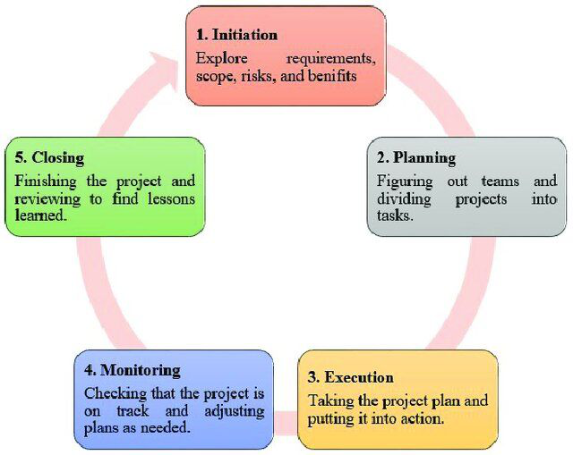
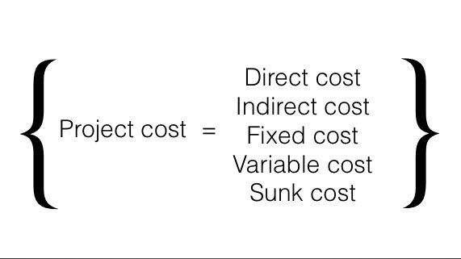

All 25 exam questions, answered the way I'd write them in the exam hall. Definitions, diagrams, tables, numericals and tips.
5 marksevery answer
A+
ROI · NPV · IRR
Agilesprint ready
25 Q&A ✦
✓ Exam Ready
Don't panic :)
✎ Written only from my class notesA4 · Exam Edition
Created byRonit Kaushal
How to write a 5-mark answer
Read this once before you start. It takes 1 minute.
A 5-mark answer needs around 1.5 to 2 pages in the exam. Examiners give marks for structure, not just length. Every answer in this book follows the same pattern, so you can copy the style straight into your answer sheet:
The 5-step answer pattern used on every page
Symbols used in this book
Symbol
Meaning
Boxed definition
Write this word-for-word as your first line.
✎ Exam tip
A small trick to get extra marks.
★ Remember
A one-line memory hook.
Highlighted
Keywords the examiner looks for.
Boxed answer
Final answer of a numerical. Always box it in the exam!
For numericals, always write…
Given data (list it neatly).
The formula in words first.
Step-by-step working, with units (₹, days, weeks, %).
The boxed final answer.
One line of interpretation or decision (accept / reject, good / bad).
Formula + steps + box + one-line meaning = full marks in numericals.
All content in this book comes from the class notes: Project, Project Life Cycle, Project vs Programme, Exploring Opportunities in PM, Types of Cost, Waterfall Method, Agile/Sprint Planning, Unit II (Business Case) and the Assignment practical questions.
Q1What is a Project?
5 marksUnit I · Basics
A project is a temporary, planned piece of work with a clear start and end date, created to make a unique product, service or result.
Ans. In simple words, a project is a one-time job that is done to create something new. It begins on a fixed date, it finishes on a fixed date, and once its work is delivered the project closes down.
PMBOK® Guide definition
According to the PMBOK® Guide (PMI, 2008), a project is "a temporary endeavor undertaken to create a unique product, service or result."
Projects are temporary and close down on the completion of the work they were chartered (approved) to deliver.
Another way to define it
A project is a set of tasks that must be completed within a defined timeline to accomplish a specific set of goals. These tasks are completed by a group of people called the project team, which is led by a project manager. The project manager oversees the planning, scheduling, tracking and successful completion of the project.
More specifically, a project is a series of structured tasks, activities and deliverables that are carefully executed to achieve a desired outcome.
Key parts of a project
Temporary + Unique + Limited = a Project
Temporary: It has a fixed start date and a set finish date.
Unique goal: It creates something new or different, unlike regular daily work.
Limits: It must follow rules for time, money and supplies (resources).
Project vs Regular work
Basis
Project
Regular work (operations)
Nature
One-time, temporary
Ongoing, repeated every day
Output
Something new and unique
Same routine output
End date
Fixed finish date
No fixed end
Example
Building a brand new mobile app
Fixing bugs on that app every day after it is launched
Examples of projects
Video game development
Building construction
Natural disaster relief efforts
Promo campaigns for musicians
Events like Fashion Week
Humanitarian aid efforts overseas
A bank's mobile banking app in 12 months
Construction of a new hospital (₹50 crore, 2 years)
Every project has a life cycle
Every project moves through the project life cycle, a basic framework that project managers use to structure projects and set them up for success.
The five phases every project passes through

Project life cycle diagram, from Project life cycle.pdf (p. 2)
Start with the PMBOK definition in quotes, then draw Fig 1.1. The words "temporary" and "unique" must appear in your answer.
A project is a temporary, goal-oriented effort with a definite beginning and end. It is carried out by a team under a project manager, within limits of time, cost and resources, to create a unique product, service or result.
Q2What is Project Management?
5 marksUnit I · Basics
Project Management is the process of planning, executing, monitoring and successfully completing a project within time, cost and quality constraints, so that the project achieves its goals.
Ans. A project does not complete itself. Someone has to plan the work, divide it among people, track progress and solve problems. This whole job is called project management, and the person who leads it is the project manager.
The project manager oversees the planning, scheduling, tracking and successful completion of the project and leads the project team.
Project management integrates planning, leadership, communication, resource management and risk control to achieve strategic organizational goals.
The three constraints of a project
A project is successful when it is delivered on time, within cost and at the required quality
Process of project management (5 phases)
The 5 phases of project management
Initiation: The project's feasibility and value are assessed. Objectives, scope, purpose and stakeholders are defined. Activities: develop a business case, conduct a feasibility study, identify stakeholders, create a project charter that formally authorizes the project.
Planning: A roadmap is made to finish on time and within budget. The project is broken into smaller tasks with milestones. Plans made: project management plan (WBS + Gantt chart), risk plan, financial plan, resource plan, communication plan and quality plan (KPIs).
Execution: The plan is put into action and deliverables are completed. The PM assigns tasks, clarifies roles, answers questions, oversees work, facilitates communication and supports the team.
Monitoring & Controlling: Progress is tracked using timesheets, reports, Gantt charts or Kanban boards. The PM controls timelines, cost, team, quality and risk.
Closure: The project is closed, knowledge and artifacts are archived, team members are released, contracts are closed and lessons learned are reviewed.
What the project manager controls
Area
Example of control action
Timelines
If a team member can't finish a task on time, assign it to someone else.
Cost
If a vendor costs more than expected, reduce the project scope.
Team
If two members disagree, the PM has the last word.
Quality
If a part is substandard, find a different approach to build it.
Risk
If a new risk appears, mitigate it before it affects the team.
Skills needed in project management
Technical skills
Soft skills
Project planning, Scheduling, Budgeting
Leadership, Communication, Negotiation
Risk & Quality management
Decision making, Team building
MS Project, Primavera, Agile & Scrum
Problem solving, Conflict management, Critical thinking
Example: a new Business School
A university plans to set up a new Business School within two years. The project manager:
Prepares the project plan and work breakdown structure (WBS).
Monitors budget, schedule and quality.
Coordinates architects, contractors, academic experts and regulators.
Identifies and mitigates project risks, and ensures a successful launch.
Importance of project management
Structure & clarity: breaks complex projects into manageable phases.
Better planning & control: each phase has clear objectives and review points.
Communication: stakeholders know what to expect at each stage.
Progress tracking: progress is measured against milestones.
Popular methodologies: Waterfall, Agile, Scrum, Kanban, Lean, Six Sigma, PRINCE2, PMBOK, CPM, PERT.
Project management is the art of planning, executing, monitoring and closing a project so that it is delivered on time, within budget and at the required quality. It turns an idea into a successful result.
Q3Characteristics of a Project
5 marksUnit I · Basics
Ans. A project is "a temporary endeavor undertaken to create a unique product, service or result" (PMBOK®). The features that make a project different from routine work are called its characteristics.
Mind-map of project characteristics
1Temporary nature
Every project has a fixed start date and a set finish date. Projects close down once the work they were chartered to deliver is complete. Example: a hospital construction project of 2 years.
2Unique output
A project creates a unique product, service or result: something new or different, unlike regular daily work. Building a new app is a project; fixing bugs every day after launch is regular work.
3Specific objectives
A project is a set of tasks done to accomplish a specific set of goals. Its scope is narrow and clearly defined, for example "one completed hospital".
4Constraints (limits)
A project must follow limits of time, money and supplies. It is judged a success only if it is delivered on time, within cost and at the required quality.
5Life cycle
Every project moves through phases: Initiation → Planning → Execution → Monitoring & Controlling → Closure. Each phase ends with one or more deliverables.
6Project team and project manager
Work is done by a project team led by a project manager, who oversees planning, scheduling, tracking and completion.
7Structured tasks and deliverables
A project is a series of structured tasks, activities and deliverables carried out in a planned order. It can be broken down using a WBS and a Gantt chart.
8Risk and uncertainty
Since the work is new, there are project-specific risks such as cost overruns, technology failure or low customer adoption. These are identified and mitigated.
9Requires costs and resources
A project uses money, people and materials. Its total cost is made up of:
Cost type
Meaning
Example
Direct
Directly linked to project work
Contractors, software licences
Indirect
Cost of doing business overall
Heating, lighting, office rent
Fixed
One-off charge, not linked to duration
One-time advertisement, 1-day Agile consultancy
Variable
Changes with the project's length
Staff salaries, machine hire
Sunk
Already spent, cannot be recovered
Money already gone (ignore in decisions)

Project cost breakdown, from Different Types of Cost in Project Management.pdf (p. 2)
10Measurable success
Success is measured by time, cost, quality and scope: "Did we deliver the required output?"
Example: launching a mobile banking app
Characteristic
In the bank's app project
Temporary
Must launch within 12 months
Unique
A brand-new mobile banking application
Constraints
Fixed budget allocated
Team
PM coordinates software developers and testers
Risk
PM manages risks and ensures timely delivery
T-U-G-C-L-T-R = Temporary, Unique, Goal, Constraints, Life cycle, Team, Risk.
A project is temporary, unique, goal-oriented and limited by time, cost and quality. It follows a life cycle and is carried out by a team led by a project manager. These characteristics separate projects from routine operations.
Q4Difference between a Project and a Program
5 marksUnit I · Concepts
Ans. Both words sound similar, but a programme is much bigger. It is a group of related projects.
According to the PMBOK® Guide (PMI, 2008), a project is "a temporary endeavor undertaken to create a unique product, service or result." Projects close down on completion of the work they were chartered to deliver.
According to The Standard for Program Management (PMI, 2008), a programme is "a group of related projects managed in a coordinated way to obtain benefits and control not available from managing them individually." Programmes may also contain work outside the scope of the individual projects.
OGC view: PRINCE2 defines the management of projects, and the Managing Successful Programmes (MSP) methodology defines a programme as "a portfolio of projects and activities that are coordinated and managed as a unit such that they achieve outcomes and realise benefits" (OGC, 2003).
Difference table
Basis
Project
Programme
Meaning
Temporary effort to produce a specific output
Coordinated group of related projects
Objective
Achieve a specific deliverable
Achieve broader strategic benefits
Scope
Narrow and clearly defined
Wider, may evolve
Duration
Usually shorter
Usually longer
Managed by
Project Manager
Programme Manager
Focus
Outputs / deliverables
Outcomes and benefits
Interdependency
Generally limited
Projects are often interdependent
Risk
Project-specific risks
Programme-level + project-level risks
Success
On time, within cost, required quality
Strategic benefits achieved across projects
Main question
"Did we deliver the required output?"
"Did the combined projects deliver the strategic benefits?"
Example
Construction of one hospital
Govt. healthcare improvement programme with many hospital projects
Example: Gandhinagar
Project: Construction of a new hospital in Gandhinagar. Cost ₹50 crore, duration 2 years, output = one completed hospital. The project manager handles construction, budget, quality and schedule.
Programme: Gandhinagar District Healthcare Development Programme. The programme manager coordinates all of these projects to improve healthcare services in the district:
One programme = many related projects
Numerical illustration
Project (activities in sequence)
A Design: 3 m, ₹5 L B Foundation: 4 m, ₹10 L C Construction: 6 m, ₹25 L D Finishing: 2 m, ₹8 L
Duration = 3+4+6+2 = 15 months
Cost = 5+10+25+8 = ₹48 lakh
Programme (Digital Education, run in parallel)
A Smart classrooms: ₹20 cr, 12 m B Teacher training: ₹5 cr, 8 m C Digital platform: ₹10 cr, 10 m
Budget = 20+5+10 = ₹35 crore
Duration = max(12, 8, 10) = 12 months
A programme is not simply "one big project". It has multiple related projects designed to produce a larger benefit.
Extending it: Portfolio
Project ⊂ Programme ⊂ Portfolio
Portfolio = all projects and programmes managed together to achieve organizational strategy. Its main question is "Are we investing in the right work?"Example: a company's portfolio has the Digital Transformation Programme (₹50 cr, 3 projects), the Market Expansion Programme (₹80 cr), a New Factory Project (₹40 cr) and an R&D Project (₹20 cr). Portfolio value = 50+80+40+20 = ₹190 crore.
Project = one specific deliverable. Programme = multiple related projects + strategic benefits. "Build one college building" is a project; "improve the entire education system" is a programme.
A project is a temporary undertaking to achieve a specific output, whereas a programme is a group of related projects managed together to achieve broader strategic benefits.
Q5Different Types of Projects
5 marksUnit I · Opportunities in PM
Ans. A project is a temporary endeavour to create a unique product, service or result. Organizations in every sector run projects, so projects can be classified by the industry or sector they belong to. With digital transformation, sustainability, AI and globalization, the types of projects keep growing.
Projects grouped by sector
Types of projects (sector-wise)
Information Technology (IT) projects: software development, cloud migration, cybersecurity, AI and digital transformation. Example: a bank launches a mobile banking app within 12 months.
Construction & infrastructure projects: buildings, highways, airports, dams, bridges, metro rail, smart cities. Example: a six-lane highway (procurement, contractors, approvals, safety, cost monitoring).
Healthcare projects: hospital expansion, Electronic Health Records, equipment installation, telemedicine. Example: a hospital introduces robotic surgery.
Manufacturing projects: new production lines, factory automation, lean manufacturing, Industry 4.0. Example: robotic assembly lines in an automobile company.
Research & Development (R&D): funded by government and industry. Example: a university's ₹2 crore grant for renewable energy technology. The PM tracks budget, milestones, procurement and reporting.
Education projects: new campus, digital classrooms, curriculum development, NAAC/NBA accreditation. Example: an LMS for 10,000 students.
Government projects: Smart City Mission, Digital India, PM Gati Shakti, Jal Jeevan Mission. Example: a digital land records system.
Banking & finance projects: digital banking, ATM networks, core banking upgrades, FinTech. Example: a public sector bank moves to a new Core Banking System.
Renewable energy projects: solar plants, wind farms, green hydrogen, battery storage. Example: a 100 MW solar plant (land, procurement, grid integration).
Event management projects: conferences, G20 Summit, Olympics, IPL, trade fairs. The PM handles logistics, vendors, security and schedules.
NGO projects: education, health, women empowerment, rural development, climate change. Example: a UNICEF-funded education project in rural India.
International development projects: poverty reduction, water supply, climate adaptation, funded by the World Bank, ADB and UNDP.
Artificial Intelligence projects: chatbots, predictive analytics, machine learning, robotics, Generative AI. Example: an AI customer-support chatbot.
Pharmaceutical projects: drug development, clinical trials, regulatory approvals. Example: developing a new vaccine in multiple phases.
Quick summary table
Type
Typical output
Common life cycle
IT / AI
App, software, chatbot
Agile / Iterative
Construction
Building, highway, bridge
Waterfall
Manufacturing
Production line
Waterfall
Healthcare
Hospital, EHR, robotic surgery
Waterfall
Events
Conference, tournament
Planned / sequential
Name at least 8 types, each with a one-line example. Examples get the marks!
Projects exist in every sector, from IT and construction to healthcare, government, NGOs and AI. The output differs, but every type needs planning, budgeting, risk management and timely delivery.
Q6Agile Project Numerical: Velocity & Days
5 marksNumerical · Agile / Scrum
Ans. Agile projects commonly use Sprint Planning, Story Points, Velocity, Burndown Charts and Capacity for numerical analysis. Learn the terms first, then the numericals are easy.
Key terms
Term
Meaning
Project
The entire journey, e.g. 6 months
Sprint
One short, time-boxed development cycle within that journey (usually 2 weeks)
Story points
Units used to estimate the size/effort of work (user stories)
Product backlog
Total list of work (story points) to be completed
Velocity
Story points a team completes per sprint
Capacity
Productive hours the team has available in a sprint
Burndown
Work remaining, tracked day by day
Project = entire journey; Sprint = one short cycle
Formulas to remember
Average VelocityVelocity = Total story points completedNumber of sprints
Sprints requiredNo. of sprints = Total story points (backlog)Velocity
DurationProject duration = No. of sprints × Sprint length
Problem 1: Calculate sprint velocity
A Scrum team completes these story points in three sprints: Sprint 1 = 24, Sprint 2 = 30, Sprint 3 = 27. Calculate the average velocity.
Average Velocity = Total story points ÷ No. of sprints
= (24 + 30 + 27) ÷ 3
= 81 ÷ 3
= 27 story points / sprint
Interpretation: The team can be expected to complete about 27 story points per sprint.
Problem 2: Number of sprints & project duration
A product backlog has 150 story points. The team's average velocity is 25 points per sprint. Each sprint lasts 2 weeks. Find (1) sprints required and (2) project duration.
Step 1: Number of sprints
No. of sprints = Total story points ÷ Velocity
= 150 ÷ 25 = 6 sprints
Step 2: Project duration
Duration = No. of sprints × Sprint length
= 6 × 2 weeks = 12 weeks
(12 weeks × 5 working days = 60 working days)
Problem 3: Team capacity (in hours / days)
A team has 5 members, each available 6 productive hours per day. Sprint = 10 working days. 20% of time goes to meetings and admin work. Find effective sprint capacity.
320 of 400 story points done → Work completed = 320/400 × 100 = 80%
In the exam, write "Given", then the formula, then the steps. Draw the velocity bar chart or burndown chart for an extra mark.
Velocity tells us how much work a team finishes per sprint. Dividing the backlog by velocity gives the number of sprints, and multiplying by sprint length gives the project duration in weeks or days.
Q7Numerical on ROI (Return on Investment)
5 marksNumerical · Project Appraisal
Ans.ROI measures how much profit a project earns compared to the money invested, expressed as a percentage. It is one of the financial measures used in a business case to analyse financial viability.
FormulaROI = Net Profit (Annual Benefit)Initial Investment × 100
When the total return/benefit is given (not profit), use: ROI = (Benefit − Investment) ÷ Investment × 100
Question
A company invests ₹8,00,000 in a new project. During the first year, the project generates a net profit of ₹1,60,000 after all operating expenses and depreciation. Calculate the Return on Investment (ROI).
Solution
Given: Initial Investment = ₹8,00,000; Net Profit = ₹1,60,000
Step 1: Write the formula
ROI = (Net Profit ÷ Initial Investment) × 100
Step 2: Substitute the values
ROI = (1,60,000 ÷ 8,00,000) × 100
Step 3: Calculate
= 0.20 × 100
= ROI = 20%
Profit as a share of investment
Interpretation: The project earns ₹20 for every ₹100 invested in the first year. A positive ROI means the project is profitable. At this rate the investment is recovered in 100 ÷ 20 = 5 years.
Example 2: Business case (online sales platform)
A retail company invests ₹10 lakh in an e-commerce platform that generates an additional profit of ₹5 lakh per year.
ROI = Annual Benefit ÷ Initial Investment × 100
= 5 lakh ÷ 10 lakh × 100 = 50% per year
This indicates a potentially attractive investment.
Example 3: Programme-level ROI (negative ROI)
Project
Investment
Annual Benefit
ERP implementation
₹30 lakh
₹12 lakh
Digital library
₹15 lakh
₹6 lakh
Online examination system
₹10 lakh
₹5 lakh
Total
₹55 lakh
₹23 lakh
ROI = (Annual Benefit − Investment) ÷ Investment × 100
= (23 − 55) ÷ 55 × 100 = −32 ÷ 55 × 100
= −58.18%
Meaning: Based only on the first year's financial benefits, the University Digital Transformation Programme has not yet recovered its investment. A programme manager would also consider long-term and non-financial benefits: better student services, faster administration, transparency and better decisions.
Decision rule
Higher ROI = better project. Compare ROI with other projects or the expected return.
Positive ROI → profitable; negative ROI → investment not yet recovered.
Limitation: simple ROI ignores taxes, depreciation, financing costs, inflation and the time value of money.
ROI = Net profit ÷ Investment × 100. Here ROI = 20%, which means the project returns one-fifth of its cost every year and is financially worthwhile.
Q8Numerical on Payback Period Method
5 marksNumerical · Project Appraisal
Ans. The Payback Period is the time (in years) a project takes to recover its initial investment from the cash inflows it generates. Shorter payback = better (less risky).
(b) Unequal cash inflowsPB = Years before full recovery + Amount still to be recoveredCash inflow of the next year
Question (unequal cash flows)
A company invests ₹10,00,000 in a project. Expected annual cash inflows are: Year 1 = ₹2,50,000; Year 2 = ₹3,00,000; Year 3 = ₹3,50,000; Year 4 = ₹2,00,000; Year 5 = ₹1,50,000. Calculate the Payback Period.
Solution
Step 1: Since the inflows are unequal, prepare a cumulative cash inflow table.
Year
Cash Inflow (₹)
Cumulative Inflow (₹)
Remark
1
2,50,000
2,50,000
not recovered
2
3,00,000
5,50,000
not recovered
3
3,50,000
9,00,000
₹1,00,000 short
4
2,00,000
11,00,000
recovered here ✓
5
1,50,000
12,50,000
–
Step 2: After 3 years, ₹9,00,000 is recovered. Amount still to be recovered = 10,00,000 − 9,00,000 = ₹1,00,000.
Step 3: Year 4 brings ₹2,00,000. Fraction of year 4 needed = 1,00,000 ÷ 2,00,000 = 0.5 year.
Payback Period = 3 + (1,00,000 ÷ 2,00,000)
= 3 + 0.5 = 3.5 years (3 years 6 months)
Cumulative inflow crosses the investment line at 3.5 years
Example (equal cash flows)
The online sales platform costs ₹10 lakh and earns ₹5 lakh extra profit every year.
Accept the project if its payback period is shorter than the target period. Between projects, choose the shortest payback.
Merit: simple to calculate and understand; shows how fast money comes back.
Limitation: ignores the time value of money and cash flows after payback (here Year 5's ₹1.5 L is ignored). For long-term projects like a university (payback ≈ 9.3 yrs), simple payback is not sufficient. NPV, IRR and cash-flow projections should also be examined.
The project recovers its ₹10 lakh investment in 3.5 years. If management's target is, say, 4 years, the project is acceptable.
Q9Numerical on NPV (Net Present Value)
5 marksNumerical · Project Appraisal
Ans.NPV = Present value of all future cash inflows minus the initial investment. It accounts for the time value of money: ₹1 received in the future is worth less than ₹1 today, so future cash flows are discounted at the required rate of return.
FormulaNPV = Σ Cash inflow in year t(1 + r)t − Initial Investment
A company is considering a project requiring an initial investment of ₹12,00,000. Expected cash inflows: Year 1 = ₹3,00,000; Year 2 = ₹4,00,000; Year 3 = ₹5,00,000; Year 4 = ₹4,00,000. The required rate of return is 10%. Calculate the NPV and state whether the project should be accepted.
Solution
Given: Investment = ₹12,00,000; r = 10%; n = 4 years
Step 1: Discount factors at 10%
Year 1: 1 ÷ (1.10)¹ = 1 ÷ 1.10 = 0.9091
Year 2: 1 ÷ (1.10)² = 1 ÷ 1.21 = 0.8264
Year 3: 1 ÷ (1.10)³ = 1 ÷ 1.331 = 0.7513
Year 4: 1 ÷ (1.10)⁴ = 1 ÷ 1.4641 = 0.6830
Step 2: Present value table
Year
Cash Inflow (₹)
DF @ 10%
Present Value (₹)
1
3,00,000
0.9091
2,72,730
2
4,00,000
0.8264
3,30,560
3
5,00,000
0.7513
3,75,650
4
4,00,000
0.6830
2,73,200
Total Present Value of inflows
12,52,140
Step 3: NPV
NPV = Total PV of inflows − Initial Investment
= 12,52,140 − 12,00,000
= NPV = + ₹52,140
Cash-flow timeline: future inflows are discounted back to today
Decision
Since NPV is positive (+₹52,140), the project earns more than the required 10% return. Therefore, the project should be ACCEPTED based on the NPV criterion.
NPV result
Meaning
Decision
NPV > 0
Returns more than the required rate
Accept ✓
NPV = 0
Returns exactly the required rate
Indifferent
NPV < 0
Returns less than the required rate
Reject ✗
Always show the DF column. Even if your final figure differs slightly due to rounding, the method gets full marks.
The PV of inflows (₹12,52,140) exceeds the investment (₹12,00,000), giving a positive NPV of ₹52,140. The project adds value and should be accepted.
Q10Explain the Waterfall Method
5 marksUnit I · Life-cycle models
The Waterfall Method is a traditional, sequential project management approach in which a project is divided into clearly defined phases, and one phase must be completed before the next phase begins.
Ans. It is called "Waterfall" because progress flows downward through the stages, just like water falling down steps. Water never flows back up, and in this model you do not go back to a finished phase.
Waterfall: each phase flows down into the next
Phases of the Waterfall model
Phase
Main activity
Output
1. Requirements
Identify project requirements
Requirement document
2. Design
Develop technical / project design
Design specification
3. Development
Build the product / system
Working product
4. Testing
Identify and correct defects
Tested product
5. Implementation
Deliver / deploy the product
Operational system
6. Maintenance
Fix problems, make improvements
Maintained system
Features
Linear & sequential flow: each phase depends on the deliverables of the previous one.
Not iterative: unlike Agile or iterative models, it does not repeat cycles.
No flexibility to revisit earlier steps; little room for change once a phase is finished.
Clearly defined phases with a document/output at the end of each.
Best for projects with well-defined requirements and minimal expected changes.
Where is it used?
Projects that often follow Waterfall: manufacturing, construction and healthcare projects, e.g. constructing a building, where the foundation must be finished before the walls.
Advantages & limitations
Advantages ✓
Simple, clear structure
Each phase has a fixed output
Easy to calculate duration & cost (phases add up)
Good for stable requirements
Limitations ✗
No flexibility for changes
Late changes cause significant delays
User feedback comes only at the end
Risk of building unwanted features
Waterfall vs Agile (quick compare)
Waterfall
Agile
Linear, one phase after another
Iterative, in short sprints
Changes are difficult
Changes added to the product backlog
Feedback at the end
Continuous feedback after every sprint
Construction, manufacturing
Software, e-commerce
Numerical 1: Project duration
Phases: Requirements 10 days, Design 15, Development 30, Testing 12, Implementation 8, Maintenance setup 5. Since phases are sequential, durations are simply added:
In Waterfall, a delay in one phase pushes every later phase, so the whole project gets delayed.
The Waterfall method is a step-by-step, downward-flowing approach: Requirements → Design → Development → Testing → Implementation → Maintenance. It is simple and well-controlled but inflexible, so it suits projects with clear, stable requirements.
Q11Explain Business Case Techniques
5 marksUnit II · Business Case
A business case is a structured document that explains why a project, investment or business initiative should be undertaken. It provides a logical justification for allocating money, people, time and other resources to a proposed activity.
Ans. In project management the business case is very important. It is the foundation for deciding whether a project should be started, and whether it remains worthwhile as circumstances change.
Running example: A small retail shop sells only through its physical store and is losing customers to online competitors. It considers investing ₹10 lakh in an online sales platform.
1. Identify the problem or opportunity
Why do we need the project? What happens if we do nothing? Who is affected? The shop is losing customers and its market is limited to nearby customers. Opportunity: build an e-commerce platform.
2. Define business objectives (SMART)
Objectives should be Specific, Measurable, Achievable, Relevant and Time-bound. E.g. increase sales by 20% within two years; reach customers outside the local market.
3. Identify alternative solutions
Don't assume one solution. Compare options, e.g. do nothing, a smaller version, a full version, or a partnership.
4. Conduct a feasibility analysis
Feasibility
Question asked
Technical
Can we implement the technology?
Financial
Can we afford it, and will it give enough returns?
Operational
Can employees and existing systems support it?
Legal / regulatory
Are there any legal constraints?
Market
Is there enough customer demand?
5. Estimate costs
Cost item
Estimated cost
Website & technology
₹4 lakh
Digital marketing
₹2 lakh
Inventory / logistics integration
₹2 lakh
Employee training
₹1 lakh
Contingency
₹1 lakh
Total initial investment
₹10 lakh
Also consider recurring operating costs, not just the initial investment.
6. Estimate benefits
Financial
Increased sales (+₹25 L/yr)
Increased profit (+₹5 L/yr)
Reduced operating cost
Improved productivity
Non-financial
Customer satisfaction
Brand image
Wider market reach
Competitive advantage
7. Assess risks
Risk
Impact
Mitigation
Low customer adoption
Lower sales
Strong digital marketing
Cybersecurity problems
Financial / reputation loss
Security controls
Technology failure
Business disruption
Backup & support systems
Higher costs
Lower profitability
Cost monitoring
Strong competition
Lower market share
Competitive pricing & service
8. Analyse financial viability
Techniques: Payback Period, ROI, NPV, IRR, Cost–Benefit Analysis (plus sensitivity and scenario analysis for big projects).
Payback = 10 L ÷ 5 L = 2 years
ROI = 5 L ÷ 10 L × 100 = 50% per year
9. Select the preferred option
Recommended: a company-owned e-commerce platform with outsourced logistics and payment integration. This gives the best balance of cost, benefit, risk, feasibility and strategic alignment.
10. Prepare the business case document
Element
Business case summary
Problem
Declining store growth, limited reach
Objective
Increase sales, reach new customers
Investment
₹10 lakh
Annual extra profit
₹5 lakh
ROI / Payback
50% per year / 2 years
Major risks
Competition, cybersecurity, low adoption
Recommendation
Develop an e-commerce platform
Importance of a business case
Supports decision-making: is the project worth pursuing?
Establishes justification: shows the need and expected value.
Estimates costs & benefits (financial and non-financial).
Identifies risks and how to manage them.
Aligns with strategy and organisational goals.
Helps obtain funding from management, investors and banks.
Provides a basis for evaluation: actual results are later compared with projections.
Case: a new university in Satna (M.P.)
Investment ≈ ₹140 crore; fee ₹1.5 L/student. With 2,000 students revenue = ₹30 cr; with 5,000 = ₹75 cr. Annual surplus ₹15 cr → payback ≈ 9.3 years. A sensitivity analysis tests "what if enrolment is lower?":
Scenario
Students
Tuition revenue
Pessimistic
1,500
₹22.5 crore
Base case
2,000
₹30 crore
Optimistic
2,500
₹37.5 crore
Recommended: phased development (Phase I Management, Economics, CS → Phase II Engineering, Law, AI → Phase III research, PhD) to reduce risk. Proceed only after satisfactory regulatory, market, financial and academic feasibility studies.
A business case proves: "This is the problem, this is the solution, this is the cost, this is what we gain, these are the risks, so this is why we should (or should not) invest."
Business case techniques (problem identification, SMART objectives, options, feasibility, cost and benefit estimation, risk assessment and financial analysis) ensure that resources go only to projects that deliver genuine organisational value.
Q12What is Project Appraisal?
5 marksUnit II · Appraisal
Project Appraisal is the process of evaluating a proposed project before investing in it by examining its feasibility, costs, benefits, risks and financial returns, to decide whether the project is financially and strategically justified.
Ans. Before an organisation spends money, people and time on a project, it must check: "Is this project worth doing?" Project appraisal answers this question. It happens in the Initiation phase of the project life cycle, through the business case and the feasibility study.
"Why should we invest ₹X crore in this project, what value will it create, what risks will we face, and is the investment financially and strategically justified?"
Aspects of project appraisal
The three pillars of project appraisal
1Market appraisal
Is there enough customer demand? Study the population, competitors, fee/price structures, preferences and employment opportunities. E.g. demand for BBA/MBA, BCA/MCA, B.Tech and AI programmes in Satna.
2Technical appraisal
Can we build it? Check land, buildings, labs, IT and digital infrastructure, and the required technology.
3Financial appraisal
Can we afford it, and will it give enough returns? Use Payback, ROI, NPV, IRR, cash-flow projections and break-even analysis.
4Operational & legal appraisal
Can employees and systems support it? Are all regulatory approvals and accreditation requirements satisfied?
5Risk appraisal
Identify major risks, their impact and mitigation. Use sensitivity analysis ("what if enrolment falls to 1,500?") and scenario analysis (pessimistic / base / optimistic).
Steps in project appraisal
Appraisal leads to a go / no-go decision
Example: e-commerce platform appraisal
Appraisal check
Result
Market
Customers moving to online shopping ✓
Cost
₹10 lakh initial investment
Benefit
₹5 lakh extra profit per year
Payback / ROI
2 years / 50% per year ✓
Risks
Low adoption, cybersecurity (mitigated)
Decision
Commercially attractive → GO
Importance
Prevents wasting resources on unviable projects.
Helps select the best project among alternatives.
Gives evidence to banks, investors and funding agencies.
Identifies risks early so they can be managed.
Ensures the project is aligned with organisational strategy.
Project appraisal is the "health check" of a project before money is spent. Through market, technical, financial and risk evaluation, it tells management whether to proceed, modify or reject the project.
Q13Explain the Types of Projects
5 marksUnit I · Classification
Ans. A project is a temporary endeavour to create a unique product, service or result. Projects can be classified in three ways: (A) by life-cycle approach, (B) by scale / structure and (C) by sector.
Q5 and Q13 are often asked as the same question. Write the sector-wise list from Q5 and the life-cycle types below. This answer is the "explain" version.
(A) Types by life-cycle approach
Every team is unique, so there are three types of project life cycles. Choose the one that fits the project.
The three project life-cycle types
1. Waterfall (predictive) projects
Follow a linear sequential flow; each phase depends on the deliverables of the previous one. Not iterative, no revisiting steps. Best for well-defined requirements. E.g. manufacturing, construction, healthcare projects.
2. Agile projects
Emphasise flexibility and iterative progress, adapting through constant feedback. Popular with software teams. Two frameworks:
Scrum: time-boxed sprints with set goals and regular reviews.
Kanban: visualise tasks, limit work in progress, keep a continuous flow. Ideal when there are no strict deadlines.
E.g. XYZ Retail's e-commerce platform built as an MVP in four 2-week sprints.
3. Iterative projects
A flexible, cyclical approach: build a working version through repeated cycles of prototyping, testing and refining, and improve it with each cycle. Feedback usually comes at the end of a milestone (in Agile it is more continuous).
Basis
Waterfall
Iterative
Agile
Flow
Linear
Cyclical
Short sprints
Change
Difficult
Each cycle
Anytime (backlog)
Feedback
At the end
Per milestone
Continuous
Best for
Stable needs
Complex, evolving needs
Uncertain needs
(B) Types by scale / structure
Individual project: one specific deliverable. E.g. New Factory Project, ₹40 crore.
Programme: a group of related projects managed together for strategic benefits. E.g. Digital Transformation Programme, ₹50 crore, 3 projects.
Portfolio: all projects and programmes managed to achieve strategy. E.g. total strategic investment, ₹190 crore.
(C) Types by sector
IT · Construction & infrastructure · Healthcare · Manufacturing · R&D · Education · Government · Banking & finance · Renewable energy · Events · Disaster management · NGO · International development · AI · Pharmaceutical. (See Q5 for an example of each.)
Projects can be classified by life cycle (Waterfall, Agile, Iterative), by scale (project, programme, portfolio) and by sector (IT, construction, healthcare and so on). Knowing the type helps the manager choose the right approach.
A1Methods of Project Appraisal
5 marksUnit II · Appraisal
Ans.Project appraisal means evaluating a project before investing, to check whether it is financially and strategically justified. Management uses the following financial measures (methods), as listed in the business case notes:
Classification of appraisal methods
1Payback Period
Time taken to recover the initial investment. Payback = Investment ÷ Annual cash inflow.E-commerce: 10 L ÷ 5 L = 2 years. Shorter is better.
2Return on Investment (ROI)
Profit as a % of investment. ROI = Net profit ÷ Investment × 100.₹1.6 L ÷ ₹8 L × 100 = 20%. Higher is better.
3Net Present Value (NPV)
PV of future inflows minus investment, discounted at the required rate. ₹12,52,140 − ₹12,00,000 = +₹52,140 → accept. Accept if NPV > 0.
4Internal Rate of Return (IRR)
The discount rate at which NPV = 0. Same project: IRR ≈ 11.89% > 10% required → accept.
5Cost–Benefit Analysis
Compares total costs with total financial and non-financial benefits (customer satisfaction, brand image, market reach).
6–8Sensitivity, Scenario & Break-even analysis
Sensitivity: how results change if one key assumption changes (e.g. enrolment). Scenario: pessimistic / base / optimistic cases (1,500 / 2,000 / 2,500 students → ₹22.5 / 30 / 37.5 crore). Break-even: minimum level (e.g. enrolment) at which revenue covers costs.
Summary table
Method
Formula / idea
Accept if
Time value?
Payback
Investment ÷ annual inflow
≤ target period
No
ROI
Profit ÷ investment × 100
≥ expected %
No
NPV
PV inflows − investment
NPV > 0
Yes
IRR
Rate where NPV = 0
IRR > required rate
Yes
CBA
Benefits vs costs
Benefits > costs
–
Besides these financial methods, appraisal also covers market, technical, operational and legal feasibility (see Q12).
Payback and ROI are simple, quick methods; NPV and IRR are more accurate because they consider the time value of money. For large long-term projects, sensitivity and scenario analysis should be added.
A2What is ROI (Return on Investment)?
5 marksUnit II · Financial measures
Return on Investment (ROI) is a financial measure that shows the profit (benefit) earned from a project as a percentage of the money invested in it.
Ans. ROI answers a simple question: "For every ₹100 I put into this project, how much do I get back as profit?" It is one of the main measures used in the financial viability step of a business case, along with Payback, NPV, IRR and cost–benefit analysis.
FormulaROI = Net Profit (Annual Benefit)Initial Investment × 100
Features of ROI
Expressed as a percentage (%), so projects of different sizes can be compared easily.
Can be calculated per year (simple annual ROI).
Can be calculated for a project or a whole programme.
Positive ROI = profitable; negative ROI = investment not recovered.
Example
A company invests ₹8,00,000 and earns ₹1,60,000 net profit in year 1.
ROI = 1,60,000 ÷ 8,00,000 × 100 = 20%
ROI as a share of investment
Uses of ROI
Project selection: choose the project with the higher ROI.
Business case: justify investment to management and banks (e-commerce: 50% ROI).
Performance evaluation: compare actual ROI with projected ROI later.
Programme review: University Digital Transformation Programme ROI = −58.18% in year 1, which signals that long-term benefits must be considered.
Limitations
A proper business case should also account for taxes, depreciation, financing costs, cash flows, inflation and the time value of money. Simple ROI ignores these, and it also ignores non-financial benefits.
ROI is a simple, popular measure of profitability: profit ÷ investment × 100. A higher ROI means a more attractive project, but it should be used together with NPV and IRR.
A3What is the Formula for ROI?
5 marksUnit II · Formula
Ans. ROI (Return on Investment) measures profitability as a percentage of the amount invested. Two forms of the formula are used, depending on what the question gives you:
Form 1: when Net Profit is given
ROI (simple annual)ROI = Net ProfitInitial Investment × 100
Net Profit = profit after all operating expenses and depreciation (or the annual benefit).
Initial Investment = total money put into the project at the start.
Form 2: when total Benefit / Return is given
ROI (gain over cost)ROI = Benefit − InvestmentInvestment × 100
Here we first subtract the investment from the benefit to get the net gain.
ROI = Gain ÷ Cost × 100. Always multiply by 100 and write the % sign!
The ROI formula expresses gain relative to cost as a percentage. Use Net Profit ÷ Investment × 100 when profit is given, and (Benefit − Investment) ÷ Investment × 100 when total benefit is given.
A4Calculate ROI using Profit and Initial Investment
5 marksNumerical · ROI
Question
A company invests ₹8,00,000 in a new project. During the first year, the project generates a net profit of ₹1,60,000 after all operating expenses and depreciation. Calculate the ROI.
Ans.
Given:
Initial Investment = ₹8,00,000
Net Profit (Year 1) = ₹1,60,000 (after expenses and depreciation)
To find: ROI (%)
FormulaROI = Net ProfitInitial Investment × 100
Step 1: Substitute
ROI = 1,60,0008,00,000 × 100
Step 2: Simplify the ratio
1,60,000 ÷ 8,00,000 = 16 ÷ 80 = 1 ÷ 5 = 0.20
Step 3: Convert to %
0.20 × 100 = ROI = 20%
Interpretation
The project earns ₹20 profit for every ₹100 invested in the first year.
ROI is positive, so the project is profitable.
At 20% per year, the investment would be recovered in about 5 years (100 ÷ 20).
If the company's expected return is lower than 20%, the project is acceptable.
Second example (business case)
Investment in an online sales platform = ₹10 lakh; additional profit = ₹5 lakh per year.
ROI = 5,00,000 ÷ 10,00,000 × 100
= 0.5 × 100 = 50% per year
Project
Investment
Profit
ROI
New project
₹8,00,000
₹1,60,000
20%
Online platform
₹10,00,000
₹5,00,000
50%
If we compare, the online platform has the higher ROI and is the more attractive investment.
Write "ROI is positive, so the project is profitable" as your last line. Interpretation carries marks.
ROI = 1,60,000 ÷ 8,00,000 × 100 = 20%. The project gives a healthy return on the money invested.
A5What is the Payback Period Method?
5 marksUnit II · Financial measures
The Payback Period Method is a project appraisal technique that measures the number of years required to recover the initial investment of a project from its cash inflows (annual benefits).
Ans. It answers: "How quickly will we get our money back?" It is one of the financial measures used in the business case to analyse financial viability.
Formula
Equal cash inflowsPayback Period = Initial InvestmentAnnual Cash Inflow
Unequal cash inflowsPB = Years before recovery + Unrecovered amountNext year's inflow
How it works
Payback of the online sales platform
Examples
Project
Calculation
Payback
E-commerce platform
₹10 L ÷ ₹5 L
2 years
New university
₹140 cr ÷ ₹15 cr
≈ 9.3 years
Unequal flows (₹10 L)
3 + 1 L ÷ 2 L
3.5 years
Decision rule
Accept if payback ≤ the target (maximum acceptable) period.
Between alternatives, prefer the shorter payback, since money comes back faster and risk is lower.
Merits ✓
Simple and easy to understand
Quick to calculate
Shows liquidity / risk
Useful in the business case
Limitations ✗
Ignores time value of money
Ignores flows after payback
Not enough for long-term projects (university: also check NPV, IRR)
The payback period tells how many years a project needs to repay its cost. It is simple and useful for a first screening, but should be combined with NPV and IRR for long-term decisions.
A6Types of Payback Period Cash Flows
5 marksUnit II · Payback
Ans. The Payback Period is the time needed to recover the initial investment. How we calculate it depends on the pattern of cash inflows. There are two types:
Equal vs unequal cash inflows
1Equal (even / uniform) cash flows
The project generates the same cash inflow every year. We simply divide.
Payback = Initial InvestmentAnnual Cash Inflow
Example: E-commerce platform: ₹10 lakh ÷ ₹5 lakh per year = 2 years. University: ₹140 crore ÷ ₹15 crore = ≈ 9.3 years.
2Unequal (uneven) cash flows
The cash inflow is different each year. We cannot divide directly; instead we prepare a cumulative cash inflow table and find when the running total equals the investment.
PB = Years before recovery + Unrecovered amountCash inflow of the next year
Example: Investment ₹10,00,000; inflows ₹2.5 L, ₹3 L, ₹3.5 L, ₹2 L, ₹1.5 L. Cumulative after 3 years = ₹9 L → unrecovered ₹1 L → PB = 3 + 1/2 = 3.5 years.
Comparison
Basis
Equal cash flows
Unequal cash flows
Inflow pattern
Same every year
Changes every year
Method
Direct division
Cumulative table + interpolation
Formula
Investment ÷ annual inflow
Years + unrecovered ÷ next inflow
Example
₹10 L ÷ ₹5 L = 2 yrs
3 + 1 L/2 L = 3.5 yrs
First check if the inflows are equal or unequal, and write it down: "Since cash inflows are unequal, cumulative method is used."
Cash flows for the payback period are either equal or unequal. Equal flows use simple division, while unequal flows need a cumulative cash inflow table.
A7Calculate Payback Period for Equal Cash Flow
5 marksNumerical · Payback
Ans. When a project earns the same cash inflow every year, the payback period is found by simple division.
FormulaPayback Period = Initial InvestmentAnnual Cash Inflow
Question 1: online sales platform
A retail company invests ₹10 lakh to develop an online sales platform. It expects an additional profit of ₹5 lakh per year. Calculate the payback period.
Interpretation: The investment is recovered within two years, so management may conclude the investment is commercially attractive, provided the assumptions, risks and market conditions are reasonable.
Question 2: new university
A university needs an initial investment of ₹140 crore. Expected annual operating surplus after stabilisation = ₹15 crore. Find the payback period.
Payback = 140 ÷ 15 = 9.33 years
0.33 year × 12 = 4 months
= ≈ 9.3 years (9 years 4 months)
Interpretation: A university is a long-term investment, so simple payback is not sufficient. NPV, IRR, cash-flow projections, break-even enrolment and sensitivity/scenario analysis should also be checked.
Shorter bar = faster recovery = less risk
To convert decimal years to months, multiply the decimal part by 12.
For equal cash flows, Payback = Investment ÷ Annual inflow. The e-commerce project (2 years) recovers its money much faster than the university (≈ 9.3 years).
A8Calculate Payback Period for Unequal Cash Flow
5 marksNumerical · Payback
Question
A company invests ₹10,00,000 in a project. The expected annual cash inflows are: Year 1 ₹2,50,000; Year 2 ₹3,00,000; Year 3 ₹3,50,000; Year 4 ₹2,00,000; Year 5 ₹1,50,000. Calculate the Payback Period.
Ans. Since the cash inflows are unequal, we use the cumulative cash inflow method.
FormulaPB = Y + Unrecovered amount at start of next yearCash inflow during next year
Y = last year in which cumulative inflow is still below the investment
Step 1: Cumulative cash inflow table
Year
Cash Inflow (₹)
Cumulative (₹)
Unrecovered (₹)
1
2,50,000
2,50,000
7,50,000
2
3,00,000
5,50,000
4,50,000
3
3,50,000
9,00,000
1,00,000
4
2,00,000
11,00,000
✓ recovered
5
1,50,000
12,50,000
–
Step 2: Locate the payback year
After Year 3: cumulative = ₹9,00,000 (< ₹10,00,000)
After Year 4: cumulative = ₹11,00,000 (> ₹10,00,000)
∴ Payback lies between Year 3 and Year 4
Step 3: Unrecovered amount
= 10,00,000 − 9,00,000 = ₹1,00,000
Step 4: Apply formula
PB = 3 + (1,00,000 ÷ 2,00,000)
= 3 + 0.5
= 3.5 years
0.5 × 12 = 6 months → 3 years 6 months
Filling up the ₹10 L investment year by year
Interpretation: The project recovers its cost in 3.5 years. Year 5's inflow (₹1.5 L) comes after payback and is ignored by this method, which is a limitation.
Using the cumulative method, the payback period for unequal cash flows is 3 + 1,00,000/2,00,000 = 3.5 years.
A9Calculate Cumulative Cash Inflow for Unequal Cash Flows
5 marksNumerical · Payback
Cumulative cash inflow is the running total of cash inflows up to a given year. It is obtained by adding each year's cash inflow to the total of all previous years.
Ans. When cash inflows are unequal, we cannot divide investment by one annual figure. The cumulative inflow shows how much of the investment has been recovered by the end of each year.
Investment = ₹10,00,000. Cash inflows: Y1 ₹2,50,000; Y2 ₹3,00,000; Y3 ₹3,50,000; Y4 ₹2,00,000; Y5 ₹1,50,000. Compute the cumulative cash inflows and find when the investment is recovered.
Working: step by step
Year 1: 0 + 2,50,000 = 2,50,000
Year 2: 2,50,000 + 3,00,000 = 5,50,000
Year 3: 5,50,000 + 3,50,000 = 9,00,000
Year 4: 9,00,000 + 2,00,000 = 11,00,000
Year 5: 11,00,000 + 1,50,000 = 12,50,000
Year
Cash Inflow (₹)
Cumulative Inflow (₹)
% of investment recovered
1
2,50,000
2,50,000
25%
2
3,00,000
5,50,000
55%
3
3,50,000
9,00,000
90%
4
2,00,000
11,00,000
110% ✓
5
1,50,000
12,50,000
125%
Cumulative inflow crosses ₹10 L during Year 4
Using the cumulative inflow
The investment of ₹10 L is crossed between Year 3 (₹9 L) and Year 4 (₹11 L). Unrecovered after Year 3 = ₹1 L.
Payback = 3 + 1,00,000 ÷ 2,00,000 = 3.5 years
Cumulative cash inflows are running totals: ₹2.5 L, ₹5.5 L, ₹9 L, ₹11 L and ₹12.5 L. They show the investment is recovered during the 4th year (3.5 years), and total inflows over 5 years are ₹12.5 L.
A10What is Net Present Value (NPV)?
5 marksUnit II · Discounted methods
Net Present Value (NPV) is the difference between the present value of all future cash inflows of a project and the initial investment, where future cash flows are discounted at the required rate of return.
Ans. NPV is one of the financial measures used in a business case. Unlike simple payback and ROI, it accounts for the time value of money: ₹1 received after 3 years is worth less than ₹1 today, so every future inflow is brought back to today's value before comparing it with the cost.
NPV converts all future inflows to today's value and subtracts the cost. A positive NPV means the project earns more than the required return and adds value, so it is the most reliable appraisal method.
A11How is NPV related to Compound Interest Rate?
5 marksUnit II · Time value of money
Ans. NPV is based on the time value of money, and the time value of money works through compound interest. Discounting (used in NPV) is simply compounding in reverse.
1. Compounding: today → future
If money earns interest at rate r every year, and the interest also earns interest, then ₹P grows to:
Compound interestFuture Value = P × (1 + r)ⁿ
At 10%: ₹1 today → ₹1.10 after 1 yr → ₹1.21 after 2 → ₹1.331 after 3 → ₹1.4641 after 4 years.
2. Discounting: future → today
NPV asks the opposite question: "What is a future amount worth today?" We divide by the same compound factor:
Present valuePresent Value = Future amount(1 + r)ⁿ
Discounting is the reverse of compound interest (r = 10%)
3. Link to NPV
Year
Compound factor (1.10)ⁿ
Discount factor 1/(1.10)ⁿ
1
1.1000
0.9091
2
1.2100
0.8264
3
1.3310
0.7513
4
1.4641
0.6830
Example: ₹3,00,000 received after 1 year at 10% is worth 3,00,000 × 0.9091 = ₹2,72,730 today. Check: ₹2,72,730 invested at 10% compound interest grows back to ≈ ₹3,00,000 in one year. ✓
So NPV = Σ (inflow ÷ compound factor) − investment. In the ₹12 L project, the total PV = ₹12,52,140 and NPV = +₹52,140.
Same ₹12 L project: NPV = +₹52,140 at 10%, but −₹3,150 at 12%.
The rate at which NPV becomes exactly zero is the IRR (≈ 11.89%).
Compounding multiplies by (1+r)ⁿ; discounting divides by (1+r)ⁿ. NPV uses discounting.
NPV is built on compound interest. Each future cash flow is divided by (1 + r)ⁿ to find its present value. The higher the compound interest rate, the lower the NPV.
A12What is IRR (Internal Rate of Return)?
5 marksUnit II · Discounted methods
The Internal Rate of Return (IRR) is the discount rate at which the NPV of a project becomes zero, i.e. the rate at which the present value of cash inflows equals the initial investment.
Ans. IRR is listed with Payback, ROI and NPV as a financial measure for checking a project's viability. While NPV gives the answer in ₹, IRR gives the project's own rate of return in %, its "true earning rate".
At r = IRRΣ CFₜ(1 + IRR)ᵗ − Initial Investment = 0
Decision rule
Condition
Decision
IRR > required rate of return
Accept ✓
IRR = required rate
Indifferent
IRR < required rate
Reject ✗
Calculating IRR (trial & error + interpolation)
Same project: Investment ₹12,00,000; inflows ₹3 L, ₹4 L, ₹5 L, ₹4 L.
Every answer in this notebook is written from the PDFs in your Project Management Exam folder. Nothing was taken from the internet. Use this table to open the original note when you want to revise from the source.
Note (PDF)
What it covers
Used in
Project.pdf
Definition of project, key parts, project vs regular work, examples, life-cycle phases
Q1, Q2, Q3
Project life cycle.pdf
5 phases, PM control areas, Agile / Waterfall / Iterative life cycles, importance
Sprint vs project, Questions 1–6 (velocity, sprints, capacity, burndown, cost)
Q6, Formula sheet
Unit- II.pdf
Business case: definition, 5 questions, importance, 10 steps, e-commerce example, payback, ROI, financial measures, Satna university case study, sensitivity analysis
Your notes name these topics and give the numbers, but don't fully explain them. The standard method is shown with your notes' own data, and each one is flagged in its "From notes" tag:
Q9 / A10, NPV: the notes give the question (₹12 L, 10%) and say "time value of money"; the discount-factor working is the standard method.
A11, NPV and compound interest: not in the notes; explained with (1 + r)ⁿ using the same 10% example.
A12, IRR: the notes only list IRR; it is worked out by interpolation from the notes' NPV question (≈ 11.89%).
Q12, Project appraisal: no one-line definition in the notes; built from the Unit II feasibility, financial and risk steps.
All the best!
Define → Explain → Draw → Example → Conclude. Box your answers. Breathe. You've got this.